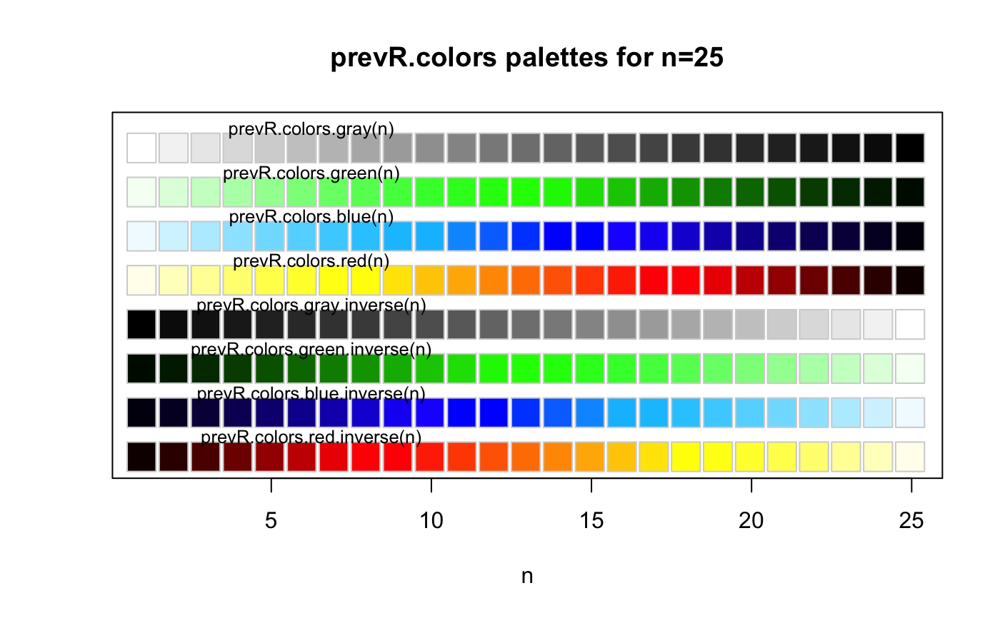

Functions generating color palettes usable with R graphical functions, in particular with
sp::spplot(). These palettes are continuous, contrast being accentuated by darkening
and lightening extreme values. prevR.demo.pal plot the available palettes.
prevR.colors.qgis.pal export a palette in a text file readable by Quantum GIS,
an open-source mapping software.
prevR.colors.blue(n)
prevR.colors.blue.inverse(n)
prevR.colors.gray(n)
prevR.colors.gray.inverse(n)
prevR.colors.green(n)
prevR.colors.green.inverse(n)
prevR.colors.red(n)
prevR.colors.red.inverse(n)
prevR.demo.pal(n, border = if (n < 32) "light gray" else NA, main = NULL)
prevR.colors.qgis.pal(file, at, pal = "red", inverse = FALSE)number of different colors in the palette.
border color.
title.
file name with extension.
list of values of the palette.
color palette to use ("red", "green", "blue" or "gray").
use the inverse palette?
prevR.demo.pal() plot the color palettes.
prevR.colors.qgis.pal() export a color palette in a text file readable by Quantum GIS.
The other functions return a list of colors coded in hexadecimal.
prevR.colors.red() produces a color gradation from white/yellow to red/dark red.prevR.colors.blue() produces a color gradation from light blue to dark blue.prevR.colors.green() produces a color gradation from light green to dark green.prevR.colors.gray() produces a color gradation from white/light gray to dark gray/black.
Functions with a suffix .inverse produce the same color gradation, but from dark colors to light ones.
To obtain the list of colors in RGB (Red/Green/Blue), use the function
grDevices::col2rgb().
The code of prevR.demo.pal() was adapted from the function demo.pal
presented in the examples of grDevices::rainbow().
Other color palettes are available in R. See for example
grDevices::rainbow() or the package RColorBrewer.
prevR.demo.pal(25)

prevR.colors.red(5)
#> [1] "#FFFF80" "#FFFF00" "#FF8000" "#FF0000" "#800000"
col2rgb(prevR.colors.red(5))
#> [,1] [,2] [,3] [,4] [,5]
#> red 255 255 255 255 128
#> green 255 255 128 0 0
#> blue 128 0 0 0 0
if (FALSE) {
prevR.colors.qgis.pal('palette.txt', seq(0,25,length.out=100), 'red')
}